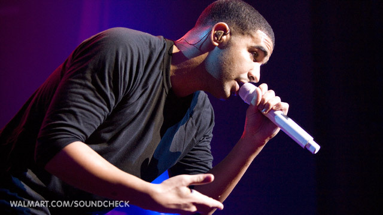
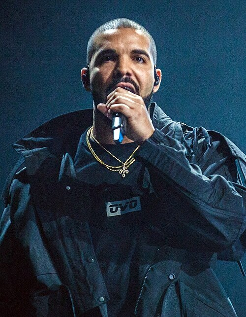

Aubrey Drake Graham · Toronto
Aubrey Drake Graham nació el 24 de octubre de 1986 en Toronto, Canadá. Creció en un hogar con raíces musicales: su padre era baterista y su madre, Sandi Graham, lo crió en la ciudad.
A los 15 años consiguió el papel de Jimmy Brooks en la serie canadiense Degrassi: The Next Generation (2001-2008). Allí se dio a conocer como actor antes de dar el salto a la música.

Mientras actuaba, Drake empezó a grabar. En 2006 publicó el mixtape Room for Improvement. Luego llegaron Comeback Season (2007) y el decisivo So Far Gone (2009), con el éxito “Best I Ever Had”.
Ese mismo año firmó con Young Money Entertainment, el sello de Lil Wayne. En 2010 debutó con el álbum Thank Me Later y en 2011 consolidó su estilo con Take Care.

Con Views (2016) y canciones como “One Dance” y “Hotline Bling”, Drake se convirtió en uno de los artistas más escuchados del mundo. Ha liderado las listas de Billboard una y otra vez y ha ganado varios premios Grammy.
También creó el sello OVO Sound y se convirtió en un símbolo de Toronto. Su mezcla de rap y melodía cambió el sonido del hip-hop contemporáneo.